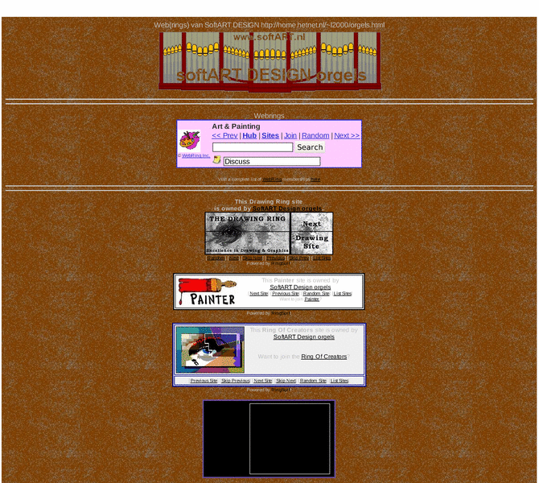

Previewing: softART DESIGN orgels organs orgeln organo Previewing: softART DESIGN orgels organs orgeln organo 
Use the left/right red arrow controls to navigate through this ring - Click the preview image to visit the member site.

Ditigal Paintings from Dutch Pipeorgans and one from France. On this site are standing a lot of painted drawings with Paint for Windows and Thumpplus.
softART DESIGN orgels organs orgeln organo owned by:
 l2000 l2000
A member of the original webring since 11/03/2009.
|
|